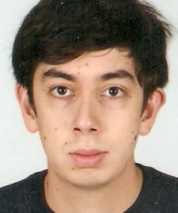
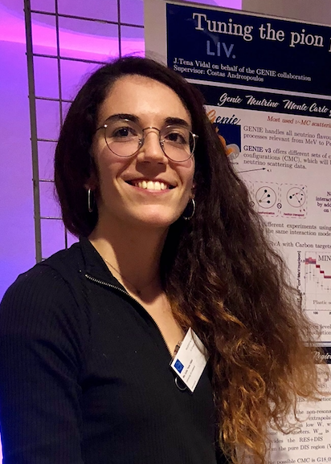
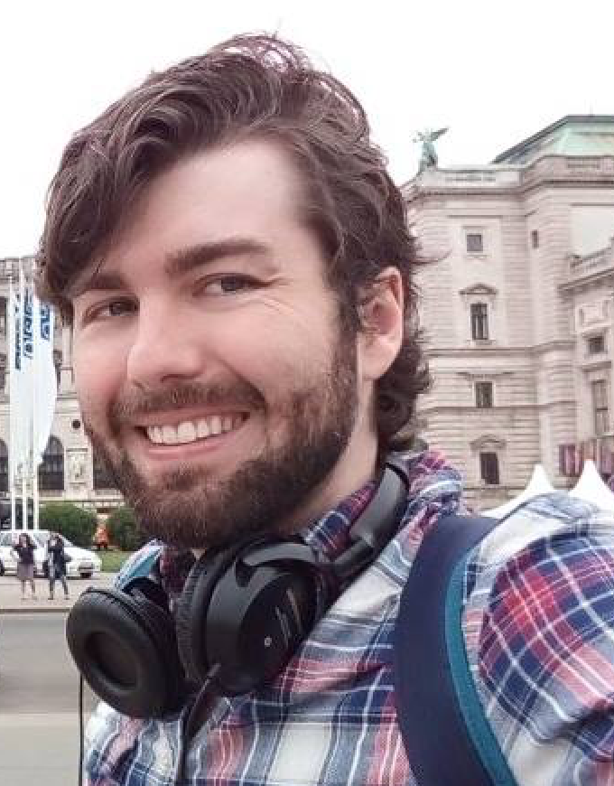
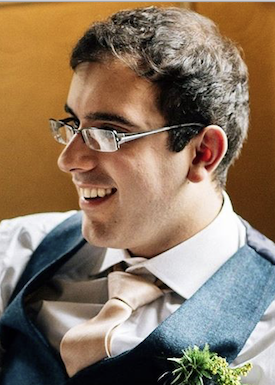
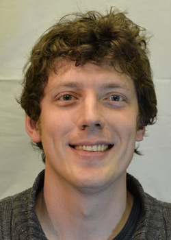

Interested in joining us for a PhD?
Fully-funded PhD positions are offered each year. Currently, I am offering projects on a) sterile neutrino searches at the Fermilab SBN project, b) cross-section measurements at the SBND experiment at Fermilab, and c) on neutrino interaction phenomenology, MC event generator development and global analyses of neutrino scattering data. Potential PhD projects are listed below. Several MPhys and BSc projects are also available. I am happy to discuss other possibilities too.
PhD thesis topics offered:
- Joint multi-channel search (muon-neutrino disappearance and electron-neutrino appearance/disappearance) for sterile neutrinos at the Fermilab Short Baseline Neutrino (SBN) program.
- SBND-driven neutrino flux and interaction systematic constraints for sterile neutrino searches at the Fermilab Short Baseline Neutrino (SBN) program.
- Measurement of νμ CC cross section without pions in the final state in SBND.
- Measurement of νμ CC π+/π- production in SBND.
- Measurement of νμ CC π0 production in SBND.
- Development of an Argon tune for the GENIE Neutrino Monte Carlo Generator using a global fit to SBND and external data.
2021 - present:
Ms. Bethany Slater
(University of Liverpool)
PhD studentship fully funded by STFC
(project reference: TBD)
Thesis [Tentative]:
Neutrino Flux and Interaction Systematic Constraints for the SBN Sterile Neutrino Oscillation Search
from a Comprehensive Joint Analysis of Exclusive Topological Event Samples on SBND
2019 - present:
Mr. Jaiden Parlone (University of Liverpool)
PhD studentship fully funded by an STFC award
(project reference: 2275621)
to the Physics Dept. of the University of Liverpool.
This studentship is part of
LIV.DAT,
the Liverpool Big Data Science Centre for Doctoral Training.
Co-supervisor: Dr. Davide Sgalaberna (ETHZ)
Thesis [Tentative]:
Charge-Parity (CP) Violation from a Global 3-Flavour Analysis of Neutrino and Antineutrino Data
from Long-Baseline Accelerator-Based Experiments.

2018 - present:
Mr. Frank Thomas Ham (University of Liverpool)
PhD studentship funded by an STFC award
(project reference 2113282)
to the Physics Dept. of the University of Liverpool.
and a Liverpool Graduate Teaching Award (GTA).
Thesis [Tentative]: SBN electron-neutrino appearance, SBND-driven systematic constraints

2017 - present:
Ms. Júlia Tena Vidal (University of Liverpool)
PhD studentship fully funded by an STFC award to
LIV.DAT, the Liverpool Big Data Science Centre for Doctoral Training
(project reference: 2021488)
Co-supervisor: Prof. Hugh Gallagher (Tufts)
Thesis [Tentative]: Global analysis of neutrino scattering data
and development of new GENIE tunes
Results from Júlia's thesis were published in
arXiv:2106.05884 [hep-ph] and
arXiv:2104.09179 [hep-ph].
Recipient of the 2018 Leo Carrol award (Liverpool HEP) for outstanding post-graduate research.
Recipient of the 2018 Leo Carrol award (Liverpool HEP) for outstanding post-graduate research.

2017 - present:
Mr. Jaggar Henzerling (University of Liverpool)
Thesis [Tentative]: Deep Learning applications
for LArTPC neutrino event reconstruction and cancer prognosis
Graduated PhD students

2016 - 10/2021:
Mr. Francis Bench (University of Liverpool)
PhD studentship funded by STFC
(project reference 1796813)
and a Liverpool Graduate Teaching Award.
Thesis: `Study of Neutrino and Anti-Neutrino Oscillations
in the 3-Flavour PMNS Paradigm at the T2K Experiment:
Constraints on the Charge-Parity Invariance Violating Phase
and Search for Electron Anti-Neutrino Appearance'
[Full text in ? (final submission pending)]
Results from Francis' doctoral work were published in
Nature 580 (2020) 7803, 339-344,
Phys. Rev. Lett. 124, 161802 (2020), and
Phys.Rev.D 103 (2021) 11, 112008.
Recipent of the 2019 John G Rutherglen memorial prize.
Recipent of the 2019 John G Rutherglen memorial prize.
2016 - 09/2021:
Ms Rhiannon Jones (University of Liverpool)
PhD studentship funded by STFC
(project reference 1796886)
and a Liverpool Graduate Teaching Award.
Co-supervisor: Prof. Christos Touramanis (University of Liverpool)
Thesis: `Muon-Neutrino Disappearance with Multiple Liquid Argon
Time Projecton Chambers in the Fermilab Booster Neutrino Beam'
[Full text in ? (final submission pending)]
Winner of UK-wide poster competition at the 2017 STFC HEP Summer School.
Best Experimental Poster award in NuPhys2018.
Best Experimental Poster award in NuPhys2018.
→ Now a Research Associate at the University of Sheffield (DUNE/SBN).

2014 - 12/2018:
Dr. Christopher Barry (University of Liverpool)
Thesis:
`Joint Analysis of Neutrino and Antineutrino Data from the T2K Experiment and
Indications for Charge-Parity (CP) Violation'
[Full text in T2K-THESIS-108]
Results from Chris's doctoral work were published in
PRL 121:171802 (2018)
→ Now a Research Associate with our group at the University of Liverpool (ESA/POSITRINO project).
2011 - 10/2015:
Dr. Steve Dennis (Rutherford Appleton Laboratory & University of Warwick)
Co-supervisors: Prof. Steve Boyd (University of Warwick) and Prof. Gary Barker (University of Warwick)
Thesis:
`Muon Antineutrino Disappearance and Non-Standard Interactions at the T2K Experiment'
[full text in T2K-THESIS-069]
Results from Steve's doctoral work were published in
PRL 116:181801 (2016)
→ Now a Research Associate in the Department of Physics at the University of Cambridge (DUNE and MicroBooNE).
→ Previously a Research Associate with our group at the University of Liverpool (DUNE, SBND, T2K and GENIE).
2011 - 12/2014:
Dr. Lorena Escudero (CSIC and University of Valencia)
Co-supervisor: Dr. Anselmo Cervera (IFIC Valencia)
Thesis:
`Joint Analysis of Three Flavour Neutrino Oscillations Combining the Electron-Neutrino Appearance
and Muon-Neutrino Disappearance Channels in the T2K Experiment'
[full text in T2K-THESIS-070]
Results from Lorena's doctoral work were published in
PRD 91:072010 (2015).
Recipient of the IFIC outstanding PhD thesis award.
Recipient of the IFIC outstanding PhD thesis award.
→ Now a Research Associate in the Department of Radiology at the University of Cambridge
→ Previously a Research Associate in the Department of Physics at the University of Cambridge (DUNE and MicroBooNE).
2010 - 07/2014:
Dr. Thomas Dealtry (STFC Rutherford Appleton Laboratory & University of Oxford)
Co-supervisor: Prof. Alfons Weber (STFC Rutherford Appleton Laboratory & University of Oxford)
Thesis:
`Precise Measurement of Muon-Neutrino Disappearance in the T2K Experiment'
[Full text in T2K-THESIS-057]
Results from Tom's doctoral work were published in
PRL 111:211803 (2013)
and
PRL 112:181801 (2014).
→ Now a Research Associate at the University of Lancaster (HyperK, T2K).
→ Previously a Research Associate at the University of Oxford (DUNE).

2008 - 12/2012:
Dr. James Dobson (Imperial College London)
Co-supervisor: Dr. Yoshi Uchida (Imperial College London)
Thesis:
`Neutrino-Induced Charged-Current π+ Production at the T2K Near Detector'
[Full text in T2K-THESIS-019]
→ Now an Ernest Rutherford Fellow at UCL (LZ).
→ Previously a Research Associate at UCL/Edinburgh (dark matter experiments).